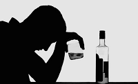

oholQUE SON?
Son reuniones o fiestas organizadas de manera informal o ilegal donde se consume alcohol sin supervision, frecuentemente con la participacion de menores de edad. Muchas veces se difunden mediante redes sociales o grupos privados.
POR QUE ASISTEN LOS JOVENES.
Presion de amigos.
Curiosidad y deseo de experimentar.
Busqueda de aceptacion social.
Falta de supervisiOn adulta.
Problemas familiares o emocionales
RIESGOS
Intoxicacion alcoholica.
Consumo de alcohol adulterado.
Accidentes y lesiones.
Violencia y peleas.
Conductas sexuales de riesgo.
Mayor probabilidad de desarrollar dependencia al alc.
PREVENCION.
La prevencion del consumo de alcohol consiste en desarrollar acciones que ayuden a los jovenes a evitar o retrasar el inicio del consumo de bebidas alcoholicas, reduciendo asi los riesgos para su salud fisica, mental y social.
La prevencion del consumo de alcohol en adolescentes es fundamental para proteger su salud y bienestar. El cerebro continua desarrollandose hasta aproximadamente la edad de 25, por lo que el consumo de alcohol durante la adolescencia puede afectar la memoria, el aprendizaje y la capacidad de tomar decisiones..

El consumo de alcohol durante la adolescencia puede provocar consecuencias graves que afectan la salud, el rendimiento escolar y las relaciones sociales.
CONSECUENCIAS FISICAS
Problema en el desarrollo del cerebro.
Problemas de memoria y concentracion.
Intoxicacion alcoholica.
Accidentes de transito y lesiones.
Alteraciones al dormir y la alimentacion
CONSECUENCIAS A LARGO PLAZO
Mayor riesgo de alcoholismo en la adultez.
Enfermedades del higado y otros organos.
Dificultades para mantener relaciones personales saludables.
Problemas laborales y economicos en el futuro.